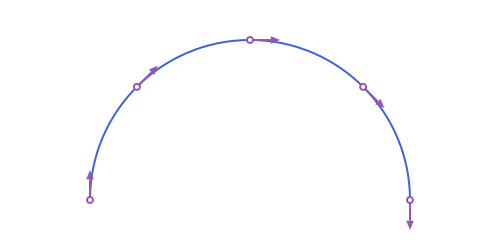
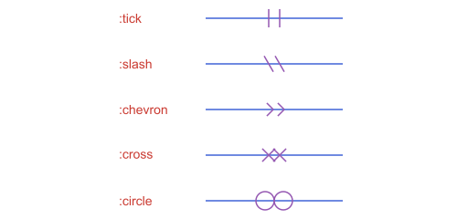
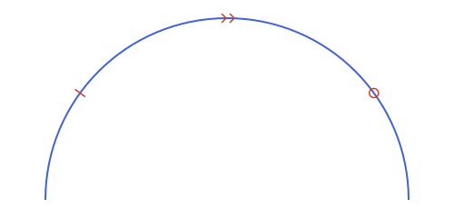
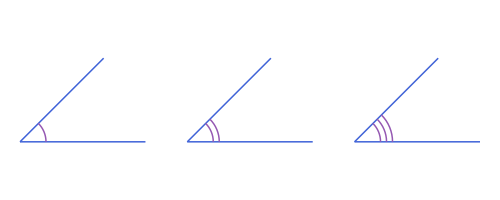
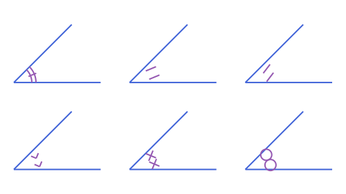
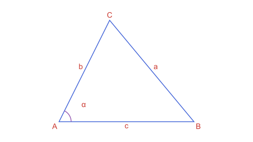
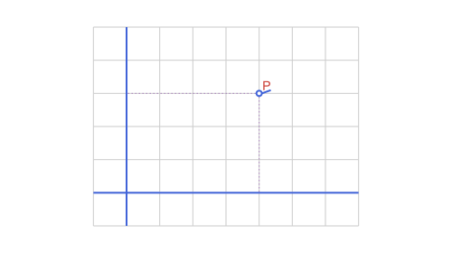
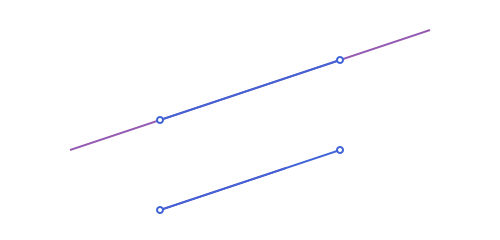

Marks, Labels & Decorations
The little things that turn a construction into a figure: the ticks that say two sides are equal, the arcs that mark equal angles, arrowheads, braces, labels placed next to the right point, dotted guides to the axes, a grid.
Every one of them follows the same plan. The function computes geometry, a Vector of ordinary objects (APSegment, APCircularArc2, APTriangle...), and path draws it. Nothing here needs Luxor until the drawing step, so all the examples on this page run without it.
Two rules from Conventions & FAQ matter here. Sizes are in the units of the objects you pass, so build decorations from the objects returned by @to_luxor_picture to get sizes in canvas units. And functions that choose a side or a compass direction read the coordinates as drawn, with y growing downward.
| You want | Function |
|---|---|
| The point and direction at some position of a curve | tangent_at |
| Ticks or symbols on a segment, arc or angle | marks |
| An arrowhead in the middle or at the end | arrow_head |
| A curly brace and its label position | brace, brace_anchor |
| Where to put a text label | label_anchor |
| Dotted lines from a point to the axes | coordinate_guides |
| A grid and the coordinate axes | grid_lines, axes_lines |
| A line lengthened by a fraction of its length | extend_line |
A point and a direction: tangent_at
tangent_at(obj, t) gives the point of obj at parameter t and the unit tangent there, as an APEquipollentVector: a vector with a point of application, which is exactly what a decoration needs. It works on segments, lines, rays and the four conic arcs, with the same t as point_on_arc, and the tangent points in the direction of travel.
using Apollonius
s = APSegment(APPoint(0.0, 0.0), APPoint(10.0, 0.0))
f = tangent_at(s, 0.25)
f.point, f.vector([2.5, 0.0], ⟨1.0, 0.0⟩)On an arc the tangent turns with the curve, and at every point it is perpendicular to the radius:
circ = APCircle2(APPoint(0.0, 0.0), 5.0)
arc = APCircularArc2(circ, APPoint(5.0, 0.0), APPoint(0.0, 5.0))
mid = tangent_at(arc, 0.5)
mid.point, dot(mid.vector, mid.point - circ.center) ≈ 0.0([3.5355339059327378, 3.5355339059327373], true)
The direction of travel is the stored one, from p1 to p2. @to_luxor_picture flips the y axis, so an arc that runs counterclockwise in your coordinates comes back with its endpoints swapped and runs clockwise on the screen. Compute the decorations on the fitted objects and they follow what you see.
Equality marks: marks
marks(obj) returns count marks centered at parameter at of a segment or arc, gap apart along the tangent. size is the full length of one mark.
| Keyword | Default | Meaning |
|---|---|---|
count | 1 | how many marks |
style | :tick | the shape, see below |
at | 0.5 | where along obj, in [0, 1] |
size | 6.0 | length of one mark |
gap | 4.0 | distance between neighbouring marks |
slant | π/6 | tilt of a :slash, from the perpendicular |
style | Mark |
|---|---|
:tick | a stroke perpendicular to the curve |
:slash | a stroke tilted slant from the perpendicular |
:chevron | a > along the direction of travel, the usual mark for parallel lines |
:cross | an x, two strokes per mark |
:circle | a small circle, never closer to its neighbours than tangent |
:z | a zigzag: a Z that stands upright when the segment is vertical on the drawn canvas, so on a horizontal segment it lies on its side |
:s | an S drawn the same way, made of two arcs |
A double or triple mark is count=2 or count=3 of the same style, and a slanted tick is :slash (slant sets its tilt). The letters :z and :s are as tall as size along the segment, so gap is raised to size when it is smaller.
two_ticks = marks(s; count=2)
length(two_ticks), only(marks(s; style=:circle, size=2.0))(2, APCircle2([5.0, 0.0], 1.0))
See script
using Apollonius, Luxor
import Luxor: julia_red, julia_blue, julia_green, julia_purple
styles = [:tick, :slash, :chevron, :cross, :circle]
lxm = @to_luxor_picture! flip=false width=500 height=240 margin=20 begin
segs = [APSegment(APPoint(4.0, 2.0 * (5 - i)), APPoint(10.0, 2.0 * (5 - i))) for i in 1:5]
names = [APPoint(0.0, 2.0 * (5 - i)) for i in 1:5]
end
begin
Drawing(lxm.width, lxm.height, :svg)
origin(); fontsize(15)
sethue(julia_blue)
path(segs, action=:stroke)
sethue(julia_purple)
for (s, style) in zip(segs, styles)
path(marks(s; count=2, style=style, size=20, gap=12); action=:stroke)
end
sethue(julia_red)
for (p, style) in zip(names, styles)
label(":" * string(style), :E, p)
end
finish()
preview()
endMarks lie on the tangent at at, so with a small gap they follow the curve closely. On a circular arc a tick lies along a radius:
tick = only(marks(arc; size=1.0))
on_line(circ.center, APLine(tick.p1, tick.p2))true
See script
using Apollonius, Luxor
import Luxor: julia_red, julia_blue, julia_green, julia_purple
lxm = @to_luxor_picture! width=500 height=240 margin=20 begin
arc = APCircularArc2(APCircle2(APPoint(0.0, 0.0), 5.0), APPoint(5.0, 0.0), APPoint(-5.0, 0.0))
end
begin
Drawing(lxm.width, lxm.height, :svg)
origin()
sethue(julia_blue)
path(arc, action=:stroke)
sethue(julia_purple)
path(marks(arc; at=0.2, count=1, style=:tick, size=14); action=:stroke)
path(marks(arc; at=0.5, count=2, style=:chevron, size=14, gap=9); action=:stroke)
path(marks(arc; at=0.8, count=1, style=:circle, size=10); action=:stroke)
finish()
preview()
endsize and gap use the units of the object you pass. On the original coordinates of a small figure the default mark, 6 units long, can be longer than the side it marks. Decorate the fitted objects, as in Workflow: From Construction to Figure.
Marks on an angle
For an APAngle2, marks has two modes. The default style = :arcs gives count concentric arcs centered at the vertex, the classic way to say two angles are equal. Any other style puts count symbols on the arc instead, with the size of each symbol in mark_size.
| Keyword | Default | Meaning |
|---|---|---|
count | 1 | arcs, or symbols |
style | :arcs | :arcs, or any style from the table above |
size | 0.15 × the shorter ray | radius of the first arc |
gap | 4.0 | radial gap between arcs, or gap between symbols |
mark_size | 6.0 | size of each symbol, when style is not :arcs |
at | 0.5 | where the symbols sit along the arc |
arcs | 0 | with a symbol style, also draw this many arcs and center the symbols across them |
ang = APAngle2(APPoint(0.0, 0.0), APPoint(4.0, 0.0), APPoint(0.0, 4.0))
arcs = marks(ang; count=2, size=0.8, gap=0.3)
[a.circle.r for a in arcs]2-element Vector{Float64}:
0.8
1.1
See script
using Apollonius, Luxor
import Luxor: julia_red, julia_blue, julia_green, julia_purple
lxm = @to_luxor_picture! width=500 height=240 margin=20 begin
angs = [APAngle2(
APPoint(8.0 * (i - 1), 0.0),
APPoint(8.0 * (i - 1) + 6.0, 0.0),
APPoint(8.0 * (i - 1) + 4.0, 4.0)) for i in 1:3]
rays = [APSegment(a.vertex, x) for a in angs for x in (a.a, a.b)] #for bb
end
begin
Drawing(lxm.width, lxm.height, :svg)
origin()
sethue(julia_blue)
path(rays, action=:stroke)
sethue(julia_purple)
for (i, a) in enumerate(angs)
path(marks(a; count=i, size=26, gap=6); action=:stroke)
end
finish()
preview()
endTo combine arcs and a symbol, pass arcs: the result has that many concentric arcs plus the symbols, centered between the first and the last arc and at least as long as the arcs are spread out plus one gap, so a :tick crosses every arc.
m = marks(ang; style=:tick, arcs=2, size=0.8, gap=0.3, mark_size=0.3)
count(x -> x isa APCircularArc2, m), count(x -> x isa APSegment, m)(2, 1)In the first panel arcs=2 puts a tick across two arcs. The other five panels show each symbol style.

See script
using Apollonius, Luxor
import Luxor: julia_red, julia_blue, julia_green, julia_purple
styles = [:tick, :slash, :chevron, :cross, :circle]
lxm = @to_luxor_picture! width=500 height=240 margin=20 begin
angs = [APAngle2(APPoint(8.0 * mod(i - 1, 3), -6.0 * fld(i - 1, 3)), APPoint(8.0 * mod(i - 1, 3) + 6.0, -6.0 * fld(i - 1, 3)), APPoint(8.0 * mod(i - 1, 3) + 4.0, 4.0 - 6.0 * fld(i - 1, 3))) for i in 1:6]
rays = [APSegment(a.vertex, x) for a in angs for x in (a.a, a.b)]
end
begin
Drawing(lxm.width, lxm.height, :svg)
origin()
sethue(julia_blue)
path(rays, action=:stroke)
sethue(julia_purple)
path(marks(angs[1]; style=:tick, arcs=2, size=26, gap=6); action=:stroke)
for (a, style) in zip(angs[2:end], styles)
path(marks(a; count=2, style=style, size=36, mark_size=16, gap=13); action=:stroke)
end
finish()
preview()
endAn APAngle2 is the wedge swept counterclockwise from a to b, and the marks go on that wedge. Swapping a and b marks the other one. If you give the points in drawn coordinates (y downward), the counterclockwise wedge looks reversed on the screen.
Arrowheads: arrow_head
path(segment; as=:arrow) puts an arrowhead at the end of a segment, and as=:doublearrow at both ends, and nowhere else. arrow_head places one anywhere on a segment, a line, a ray or an arc, as a shape you draw yourself.
| Keyword | Default | Meaning |
|---|---|---|
at | 0.5 | where along obj |
size | 10.0 | length of each side arm |
angle | π/8 | half the opening angle |
place | :center | :center puts the head's middle on the point, :tip puts its tip there |
style | :triangle | see below |
style | Head | Returns | Draw with |
|---|---|---|---|
:triangle | a filled triangle | APTriangle | action=:fill |
:stealth | a triangle with a notch in the back | APStraightNgon | action=:fill |
:open | two arms, a > | APPolyline2 | action=:stroke |
Use place=:center for an arrow in the middle of a line, and place=:tip with at=1.0 for an arrow at the end of an arc:
head = arrow_head(arc; at=1.0, place=:tip)
isapprox(head[1], arc.p2; atol=1e-9)trueSee script
using Apollonius, Luxor
import Luxor: julia_red, julia_blue, julia_green, julia_purple
lxm = @to_luxor_picture! width=500 height=240 margin=20 begin
segs = [APSegment(APPoint(0.0, 2.0 * (3 - i)), APPoint(7.0, 2.0 * (3 - i))) for i in 1:3]
names = [APPoint(-2.5, 2.0 * (3 - i)) for i in 1:3]
arc = APCircularArc2(
APCircle2(APPoint(11.0, 0.0), 3.0),
APPoint(14.0, 0.0),
APPoint(8.0, 0.0))
end
begin
Drawing(lxm.width, lxm.height, :svg)
origin(); fontsize(15)
sethue(julia_blue)
path([segs..., arc], action=:stroke)
sethue(julia_purple)
path(arrow_head(segs[1]; style=:triangle, size=14); action=:fill)
path(arrow_head(segs[2]; style=:stealth, size=14); action=:fill)
path(arrow_head(segs[3]; style=:open, size=14); action=:stroke)
path(arrow_head(arc; at=1.0, place=:tip, size=14); action=:fill)
sethue(julia_red)
for (p, style) in zip(names, (:triangle, :stealth, :open))
label(":" * string(style), :E, p)
end
finish()
preview()
endBraces: brace and brace_anchor
brace(p1, p2) is a curly brace along the segment, height deep (default 10, or half the length if that is smaller) on the side (:left or :right) of p1 → p2. It comes back as its six pieces, four quarter arcs and two straight segments, so path draws it in one call. height cannot exceed half the length, and at that limit the two straight pieces disappear.
b = brace(APPoint(0.0, 0.0), APPoint(100.0, 0.0); height=10.0)
count(x -> x isa APCircularArc2, b), count(x -> x isa APSegment, b)(4, 2)
See script
using Apollonius, Luxor
import Luxor: julia_red, julia_blue, julia_green, julia_purple
lxm = @to_luxor_picture! width=500 height=240 margin=20 begin
s1 = APSegment(APPoint(0.0, 4.0), APPoint(7.0, 4.0))
s2 = APSegment(APPoint(0.0, 0.0), APPoint(7.0, 0.0))
s3 = APSegment(APPoint(10.0, 0.0), APPoint(13.0, 5.0))
end
begin
Drawing(lxm.width, lxm.height, :svg)
origin(); fontsize(15)
sethue(julia_blue)
path([s1, s2, s3], action=:stroke)
sethue(julia_purple)
path(brace(s1.p1, s1.p2; height=14, side=:left); action=:stroke)
path(brace(s2.p1, s2.p2; height=14, side=:right); action=:stroke)
path(brace(s3.p1, s3.p2; height=14, side=:right); action=:stroke)
sethue(julia_red)
label("a", brace_anchor(s1.p1, s1.p2; height=14, side=:left)...)
label("b", brace_anchor(s2.p1, s2.p2; height=14, side=:right)...)
label("c", brace_anchor(s3.p1, s3.p2; height=14, side=:right)...)
finish()
preview()
endbrace_anchor with the same arguments gives the point of the brace and the alignment that puts a label beyond it; see the next section.
A height greater than half of distance(p1, p2) throws an ArgumentError. Only the default is reduced by itself, to half the length when that is smaller than 10.
Labels: label_anchor
Luxor places text with label(text, alignment, point), where alignment is a compass symbol such as :N or :SE. label_anchor picks both the point and the alignment for you, so the text sits on the outside:
| Call | Anchor |
|---|---|
label_anchor(obj, t; side=:left) | on a segment or arc at parameter t, on the left or right of the direction of travel |
label_anchor(ang; dist=nothing) | on an angle's bisector, dist from the vertex (default 0.25 × the shorter ray), pointing away from the vertex |
label_anchor(circle, θ) | on the circle at polar angle θ, outward |
label_anchor(p, from) | at the point p, pointing away from the point from; use the centroid as from to keep vertex labels outside a figure |
brace_anchor(p1, p2; height, side) | at the point of a brace |
The result is a NamedTuple (alignment, point) in the argument order of Luxor's label.
label_anchor(s), label_anchor(s; side=:right)((alignment = :N, point = [5.0, 0.0]), (alignment = :S, point = [5.0, 0.0]))A horizontal segment going from left to right has its :left side on top on screen, so the first is :N and the second :S. To label the vertices of a triangle so none falls inside it, pass the centroid:
t = APTriangle(APPoint(0.0, 0.0), APPoint(8.0, 0.0), APPoint(3.0, 6.0))
[label_anchor(v, centroid(t)).alignment for v in vertices(t)]3-element Vector{Symbol}:
:NW
:NE
:S
See script
using Apollonius, Luxor
import Luxor: julia_red, julia_blue, julia_green, julia_purple
lxm = @to_luxor_picture! width=500 height=240 margin=20 begin
A, B, C = APPoint(0.0, 0.0), APPoint(8.0, 0.0), APPoint(3.0, 6.0)
t = APTriangle(A, B, C)
sides = [APSegment(A, B), APSegment(B, C), APSegment(C, A)]
ang = APAngle2(A, B, C)
end
G = centroid(t)
begin
Drawing(lxm.width, lxm.height, :svg)
origin(); fontsize(15)
sethue(julia_blue)
path(t, action=:stroke)
sethue(julia_purple)
path(marks(ang; count=1, size=40); action=:stroke)
sethue(julia_red)
for (v, n) in zip(vertices(t), ("A", "B", "C"))
label(n, label_anchor(v, G)...)
end
for (s, n) in zip(sides, ("c", "a", "b"))
label(n, label_anchor(s; side=:right)...)
end
label("α", label_anchor(ang; dist=20)...)
finish()
preview()
end:N is above the point and :left is the left of the direction of travel as seen on the screen, with y growing downward. Call label_anchor and brace_anchor on the fitted objects. On coordinates with y upward the same call gives the mirrored answer.
Guides and grids
coordinate_guides(p) returns the two segments from p to the axes, the ones drawn dotted to show a point's coordinates. A guide of length zero is left out, so a point on an axis gets one segment and the origin none. Pass origin to measure against other axes.
coordinate_guides(APPoint(3.0, 4.0))2-element Vector{APSegment{2, Float64}}:
APSegment([3.0, 4.0] -> [3.0, 0.0])
APSegment([3.0, 4.0] -> [0.0, 4.0])grid_lines(bb; step) returns the lines of a grid over an APBoundingBox, vertical lines first. The grid is anchored at the origin: its lines are at whole multiples of the step, not measured from the corner of the box. xstep and ystep set the two directions apart, and a finer subgrid is a second call with a smaller step. axes_lines returns the axes that cross the box.
bb = APBoundingBox(APPoint(-2.0, -1.0), APPoint(3.0, 2.0))
length(grid_lines(bb)), length(grid_lines(bb; step=0.5)), length(axes_lines(bb))(10, 18, 2)
See script
using Apollonius, Luxor
import Luxor: julia_red, julia_blue, julia_green, julia_purple
lxm = @to_luxor_picture! width=500 height=240 margin=20 begin
grid = grid_lines(APBoundingBox(APPoint(-1.0, -1.0), APPoint(7.0, 5.0)); step=1.0)
axes = axes_lines(APBoundingBox(APPoint(-1.0, -1.0), APPoint(7.0, 5.0)))
P = APPoint(4.0, 3.0)
guides = coordinate_guides(P)
end
begin
Drawing(lxm.width, lxm.height, :svg)
origin(); fontsize(15)
@layer begin
setline(1); sethue("gray80")
path(grid, action=:stroke)
end
sethue(julia_blue)
path(axes, action=:stroke)
@layer begin
setline(5); setdash("dot"); sethue(julia_purple)
path(guides, action=:stroke)
end
sethue(julia_red)
label("P", :NE, P)
sethue("white")
path(P, action=:fillpreserve)
sethue(julia_blue); strokepath()
finish()
preview()
endgrid_lines puts its lines at whole multiples of the step, measured from the origin of the box you give it. Build the grid inside the block that is fitted, in your own coordinates, so the lines fall where the axes are. From an already fitted box, the multiples are in drawing units.
Lengthening a line: extend_line
extend_line(l, before, after) lengthens the line through l.p1 and l.p2 by fractions of distance(l.p1, l.p2) past each point, and returns the resulting APSegment. It is the relative counterpart of the absolute extend of path: 0.2 adds a fifth of the length at each end, whatever the length is. A negative fraction shortens that end.
l = APLine(APPoint(0.0, 0.0), APPoint(10.0, 0.0))
extend_line(l, 0.2), extend_line(l, 0.0, -0.3)(APSegment([-2.0, 0.0] -> [12.0, 0.0]), APSegment([0.0, 0.0] -> [7.0, 0.0]))
Drawing all of it
The decorations are ordinary objects, so path takes them directly, alone or in a Vector. This is the usual pattern, on objects already returned by @to_luxor_picture:
using Apollonius, Luxor
lxm, lxo = @to_luxor_picture width=400.0 margin=30.0 begin
seg = APSegment(APPoint(0.0, 0.0), APPoint(10.0, 0.0))
ang = APAngle2(APPoint(0.0, 0.0), APPoint(10.0, 0.0), APPoint(4.0, 6.0))
end
(; seg, ang) = lxo
@svg begin
path(seg; action=:stroke)
path(marks(seg; count=2); action=:stroke) # two ticks in the middle
path(marks(ang; count=2); action=:stroke) # two arcs on the angle
path(arrow_head(seg; at=0.3); action=:fill) # an arrow a third of the way
path(brace(seg.p1, seg.p2); action=:stroke)
label("10", brace_anchor(seg.p1, seg.p2)...) # splat: (alignment, point)
end lxm.width lxm.heightPut together, the pieces make a figure like this one: an isosceles triangle with equal-side marks, arcs on the equal angles, an arrow on the base and a brace with its label. The script is docs/illustrations/decorations/full_figure.jl.

See script
using Apollonius, Luxor
import Luxor: julia_red, julia_blue, julia_green, julia_purple
lxm = @to_luxor_picture! width=500 height=240 margin=30 begin
A, B, C = APPoint(0.0, 0.0), APPoint(10.0, 0.0), APPoint(5.0, 6.0)
t = APTriangle(A, B, C)
base, right, left = sides(t)
angA = APAngle2(A, B, C)
angB = APAngle2(B, C, A)
G = centroid(t)
end
begin
Drawing(lxm.width, lxm.height, :svg)
origin(); fontsize(15)
sethue(julia_blue)
path(t, action=:stroke)
sethue(julia_purple)
path(marks(left; size=14); action=:stroke)
path(marks(right; size=14); action=:stroke)
path(marks(angA; count=2, size=34, gap=6); action=:stroke)
path(marks(angB; count=2, size=34, gap=6); action=:stroke)
path(arrow_head(base; at=0.2, size=12); action=:fill)
path(brace(base.p1, base.p2; height=12, side=:right); action=:stroke)
sethue(julia_red)
label("b", brace_anchor(base.p1, base.p2; height=12, side=:right)...)
for (v, n) in zip(vertices(t), ("A", "B", "C"))
label(n, label_anchor(v, G)...)
end
finish()
preview()
endThe label method for APPoints and the dimension and tickline wrappers come with the Luxor extension; see Drawing with Luxor.jl.